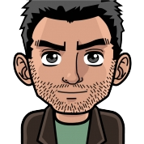

O mně
Vítejte na mém prvním webu, psát weby se teprve učím, ale myslím, že mi to docela jde.

Jmenuji se Patrik Domjen a je mi 18let. Chodím na Střední průmyslovou školu v Praze na obor IT. Kontaktovat mě můžete na kontaktní stránce.
Rád hraju hry a někdy (hlavně v létě) i sportuju.
Mým hlavním koníčkem (a doufám že jednou i zaměstnáním) je programování!